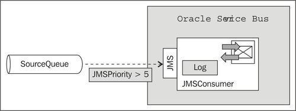
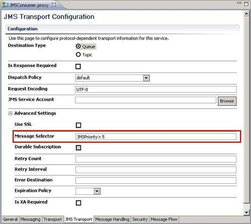
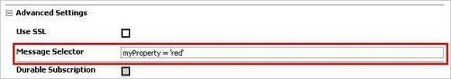
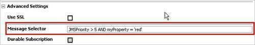

A proxy service can be configured to only consume messages that match a given criteria. This is done through the Message Selector in the JMS Transport Advanced Settings. A message selector is a logical statement similar to an SQL WHERE clause that the JMS provider evaluates against each message header or properties to determine whether the consumer should receive the message.

In this recipe, we will change the proxy service from the previous recipe Consuming messages from a JMS queue to only consume message with a priority higher than 5.
For this recipe, we will use the queue SourceQueue from the OSB Cookbook standard environment.
You can import the base OSB project containing the solution from the previous recipe into Eclipse from \chapter-3\getting-ready\consuming-messages-from-queue-topic-selectively.
To add a message selector, which only consumes messages with a priority greater than 5, perform the following steps in Eclipse OEPE:
JMSPriority > 5 into the Message Selector field.
A message selector is similar to the WHERE clause in SQL. A message selector is a logical statement which the JMS provider evaluates against each message's header or properties to determine whether the consumer, that is, the proxy service, should receive the message.
In WebLogic JMS, all selector evaluation and filtering takes place on the JMS server. A message selector can be specified for queues as well as topics.
For topics, WebLogic JMS evaluates each subscriber's message selector against every message published to the topic to determine whether to deliver the message to the subscriber.
For queues, WebLogic JMS will evaluate the message against each active consumer's message selector until it finds a match. If no active consumer's message selector matches the message, the message will remain in the queue.
Message selectors can get slow, especially when a consumer is activated later on a queue that already has a large backlog. In that case, the message selector has to be evaluated against each message in the queue. In such a case, it might be better to use multiple destinations and by that eliminate the need for message selectors.
This has nothing to do with OSB itself and is purely related to the implementation of WebLogic JMS. When using JMS with OSB, it's good to know about JMS and especially about the features and properties of the JMS provider, which in this case is WebLogic JMS.
In this section, we will show how to use user-defined properties and compound expressions for the message selector.
A message selector also works on a user-defined JMS property. For example, to set a message selector on a user-defined property myProperty and test for the value'red', the message selector should be as shown in the following screenshot:

Message selectors should be as simple as possible in order to not risk a performance penalty. The more complex a selector is, the slower its evaluation would be. A message selector can contain compound expressions with operators such as OR and AND. The next screenshot shows how to select all messages where both the priority is greater than 5 and the myProperty has a value of'red'.

When using compound selectors, the order matters. The evaluation is done from left-to-right. WebLogic JMS will short-circuit a message selector's evaluation once it determines the message does not match. So in our example, if a lot of messages have a priority of 5 or less, then these messages will not match the first evaluation criteria JMSProperty > 5 of the compound expression.